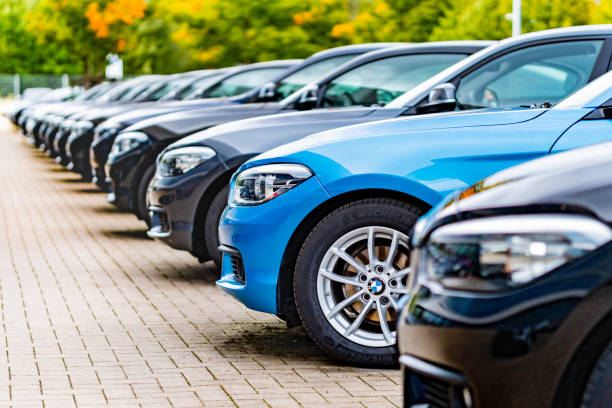
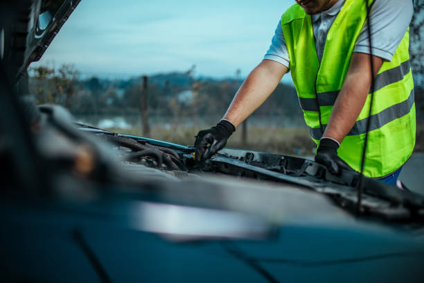

Entretien et Réparation
Nous assurons l’entretien complet de votre véhicule : vidange, freins, pneus, et diagnostic électronique.

Location de véhicules
Service de location courte et longue durée, véhicules récents et bien entretenus.

Vente de véhicules
Découvrez nos voitures neuves et d’occasion avec garantie et assistance.

Assistance et dépannage
Assistance 24h/24 et 7j/7 en cas de panne ou d’accident.